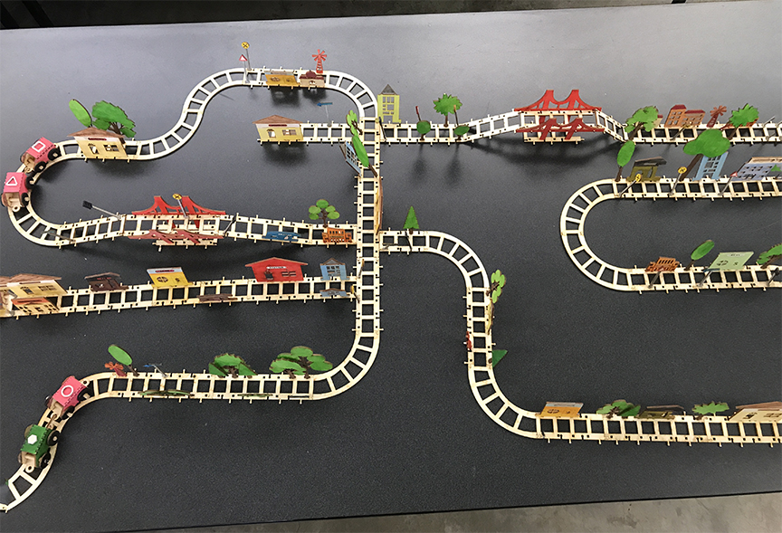

Train Set
Introduction
Our idea for our project is to creat a train track set that can create a railroad system that connects a city together. Users would have to take the given pieces and create a funtioning community.Breakdown of Task per Group Member
- Patty - Design Manager. Created: Tracks, Trains, Bridge,
- Huy - Building Designer. Created: School, Bar, Hospital, and all other buildings
- Zachary - Schema Writer. Created: Signs
- Zack - Video Producer. Created: Trees
Phase 1 - 2d Tesselations and Modular ideas with Kiragami and Oragami Systems
Our group worked together to figure out different types of modularity and tesselation systems on paper. Our first design set consited of our own triangular shapes that could connect with each other.Phase 1 Ex 1 - My Paper Tesselation

Phase 1 Ex 1 - Group Tesselations

We moved onto the process on creating shapes that could connect together using oragami.
Phase 1 Ex 2 - Paper Stars

Phase 1 Ex 3 - Snake Design

Illustrator Group Design --> pdf of different group compsotions
Phase 2 - 3D Fastener BrainStorming Designs
Each group member came up with fastener designs that could connect our peices together. Throughout this process, we were able to figure out what was working and what did not work. We created mockups using foam and contruction paper.Option B - Modified dovetail using foam board
Phase 3 -- Goldilocks Laser tests
We took our brainstorming to Illutrator so we can create vector graphics of different joints. I chose a tenon style joint for plywood.Tower made from laser cut shapes
Executing Ideas
After figuring out what we all liked as a group, we decided to choose wood as our material and use a hybrid of dovetails and pegs as our fastener systems.Phase 4 - Rough Draft Schema
Mockup of track pattern in Illustrator
Phase 5 - First Cut Document, Trial Run
Phase 6 - Refining and final cuts
Some modifications we made to our final design include slight size adjustments and the additon dovetails to the sides of our train tracks. This also allowed us to incorporate the idea of a bridge system.
Phase 7 - Assembling in Class
Final Parts cut out and painted
Train set assembled
